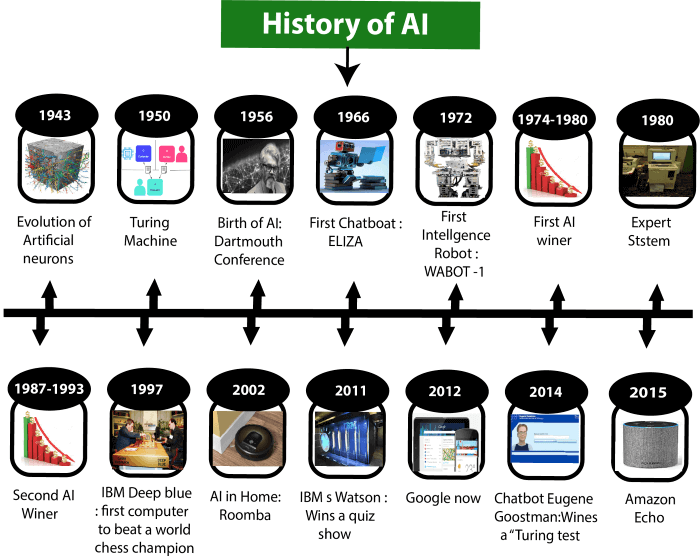

Artificial Intelligence
Artificial Intelligence is composed of two words Artificial and Intelligence. Artificial defines "man-made," and intelligence defines "thinking power", or “the ability to learn and solve problems” hence Artificial Intelligence means "a man-made thinking power."
So, we can define Artificial Intelligence (AI) as the branch of computer science by which we can create intelligent machines which can behave like a human, think like humans, and able to make decisions.
Intelligence, as we know, is the ability to acquire and apply knowledge. Knowledge is the information acquired through experience. Experience is the knowledge gained through exposure (training). Summing the terms up, we get artificial intelligence as the “copy of something natural (i.e., human beings)‘WHO’ is capable of acquiring and applying the information it has gained through exposure.”
Artificial Intelligence exists when a machine can have human-based skills such as learning, reasoning, and solving problems with Artificial Intelligence you do not need to preprogram a machine to do some work, despite that you can create a machine with programmed algorithms which can work with own intelligence.
Intelligence is composed of: ➢ Reasoning ➢ Learning ➢ Problem Solving ➢ Perception ➢ Linguistic Intelligence
An AI system is composed of an agent and its environment. An agent (e.g., human or robot) is anything that can perceive its environment through sensors and acts upon that environment through effectors. Intelligent agents must be able to set goals and achieve them. In classical planning problems, the agent can assume that it is the only system acting in the world, allowing the agent to be certain of the consequences of its actions. However, if the agent is not the only actor, then it requires that the agent can reason under uncertainty. This calls for an agent that cannot only assess its environment and make predictions but also evaluate its predictions and adapt based on its assessment. Machine perception is the ability to use input from sensors (such as cameras, microphones, sensors, etc.) to deduce aspects of the world. e.g., Computer Vision.
High-profile examples of AI include autonomous vehicles (such as drones and self-driving cars), medical diagnosis, creating art (such as poetry), proving mathematical theorems, playing games (such as Chess or Go), search engines (such as Google search), online assistants (such as Siri), image recognition in photographs, spam filtering, prediction of judicial decisions and targeting online advertisements AI deals with the area of developing computing systems that are capable of performing tasks that humans are very good at, for example recognizing objects, recognizing and making sense of speech, and decision making in a constrained environment.
The advent of Big Data, driven by the arrival of the internet, smart mobile and social media has enabled AI algorithms, in particular from Machine Learning and Deep Learning, to leverage Big Data and perform their tasks more optimally. This combined with cheaper and more powerful hardware such as Graphical Processing Units (GPUs) has enabled AI to evolve into more complex architectures. Machine Learning is an advanced form of AI where the machine can learn as it goes rather than having every action programmed by humans.

Need for Artificial Intelligence
1. To create expert systems that exhibit intelligent behavior with the capability to learn, demonstrate, explain and advice its users.
2. Helping machines find solutions to complex problems like humans do and applying them as algorithms in a computer-friendly manner.
Goals of Artificial Intelligence
Following are the main goals of Artificial Intelligence:
1. Replicate human intelligence
2. Solve Knowledge-intensive tasks
3. An intelligent connection of perception and action
4. Building a machine which can perform tasks that requires human intelligence such as: ✓ Proving a theorem ✓ Playing chess ✓ Plan some surgical operation ✓ Driving a car in traffic 5. Creating some system which can exhibit intelligent behavior, learn new things by itself, demonstrate, explain, and can advise to its user.
What Comprises to Artificial Intelligence?
Artificial Intelligence is not just a part of computer science even it's so vast and requires lots of other factors that can contribute to it. To create the AI-first we should know that how intelligence is composed, so Intelligence is an intangible part of our brain which is a combination of Reasoning, learning, problem-solving, perception, language understanding, etc.
ADVANTAGES OF ARTIFICIAL INTELLIGENCE
Following are some main advantages of Artificial Intelligence:
➢ High Accuracy with fewer errors: AI machines or systems are prone to fewer errors and high accuracy as it takes decisions as per pre-experience or information
➢ High-Speed: AI systems can be of very high-speed and fast-decision making, because of that AI systems can beat a chess champion in the Chess game.
➢ High reliability: AI machines are highly reliable and can perform the same action multiple times with high accuracy.
➢ Useful for risky areas: AI machines can be helpful in situations such as defusing a bomb, exploring the ocean floor, where to employ a human can be risky.
➢ Digital Assistant: AI can be very useful to provide digital assistant to users such as AI technology is currently used by various E-commerce websites to show the products as per customer requirements.
➢ Useful as a public utility: AI can be very useful for public utilities such as a self-driving car which can make our journey safer and hassle-free, facial recognition for security purposes, Natural language processing (for search engines, for spelling checker, for assistant like Siri, for translation like google translate), etc
DISADVANTAGES OF ARTIFICIAL INTELLIGENCE
One of the key features that distinguishes us, humans, from everything else in the world is intelligence. This ability to understand, apply knowledge and improve skills has played a significant role in our evolution and establishing human civilization. But many people (including Elon Musk the founder of ….) believe that the advancement in technology can create a superintelligence that can threaten human existence.
Every technology has some disadvantages, and the same goes for Artificial intelligence. Being so advantageous technology still, it has some disadvantages which we need to keep in our mind while creating an AI system. Following are the disadvantages of AI:
➢ High Cost: The hardware and software requirement of AI is very costly as it requires lots of maintenance to meet current world requirements
➢ Can't think out of the box: Even we are making smarter machines with AI, but still they cannot work out of the box, as the robot will only do that work for which they are trained, or programmed.
➢ No feelings and emotions: AI machines can be an outstanding performer, but still it does not have the feeling so it cannot make any kind of emotional attachment with humans, and may sometime be harmful for users if the proper care is not taken.
➢ Increase dependence on machines: With the increment of technology, people are getting more dependent on devices and hence they are losing their mental capabilities.
➢ No Original Creativity: As humans are so creative and can imagine some new ideas but still AI machines cannot beat this power of human intelligence and cannot be creative and imaginative.
History of AI
Artificial Intelligence is not a new word and not a new technology for researchers. This technology is much older than you would imagine. Even there are the myths of Mechanical men in Ancient Greek and Egyptian Myths. The following are some milestones in the history of AI which define the journey from the AI generation to till date development (see Figure 3.3).
A. Maturation of Artificial Intelligence (1943-1952)
➢ The year 1943: The first work which is now recognized as AI was done by Warren McCulloch and Walter pits in 1943. They proposed a model of artificial neurons.
➢ The year 1949: Donald Hebb demonstrated an updating rule for modifying the connection strength between neurons. His rule is now called Hebbian learning
➢ The year 1950: The Alan Turing who was an English mathematician and pioneered Machine learning in 1950. Alan Turing publishes "Computing Machinery and Intelligence" in which he proposed a test. The test can check the machine's ability to exhibit intelligent behavior equivalent to human intelligence, called a Turing test.
B. The birth of Artificial Intelligence (1952-1956)
➢ The year 1955: An Allen Newell and Herbert A. Simon created the "first artificial intelligence program" Which was named "Logic Theorist". This program had proved 38 of 52 Mathematics theorems, and find new and more elegant proofs for some theorems.
➢ The year 1956: The word "Artificial Intelligence" first adopted by American Computer scientist John McCarthy at the Dartmouth Conference. For the first time, AI coined as an academic field. At that time high-level computer languages such as FORTRAN, LISP, or COBOL were invented. And the enthusiasm for AI was very high at that time.
C. The golden years-Early enthusiasm (1956-1974)
➢ The year 1966: The researchers emphasized developing algorithms that can solve mathematical problems. Joseph Weizenbaum created the first chatbot in 1966, which was named as ELIZA. ➢ The year 1972: The first intelligent humanoid robot was built in Japan which was named WABOT-1.
D. The first AI winter (1974-1980)
➢ The duration between the years 1974 to 1980 was the first AI winter duration. AI winter refers to the time period where computer scientists dealt with a severe shortage of funding from the government for AI researches.
➢ During AI winters, an interest in publicity on artificial intelligence was decreased.
E. A boom of AI (1980-1987)
➢ The year 1980: After AI winter duration, AI came back with "Expert System". Expert systems were programmed that emulate the decision-making ability of a human expert.
➢ In the Year 1980, the first national conference of the American Association of Artificial Intelligence was held at Stanford University.
F. The second AI winter (1987-1993)
➢ The duration between the years 1987 to 1993 was the second AI Winter duration. ➢ Again, Investors and government stopped in funding for AI research due to high cost but not efficient results. The expert system such as XCON was very cost-effective.
G. The emergence of intelligent agents (1993-2011)
➢ The year 1997: In the year 1997, IBM Deep Blue beats world chess champion, Gary Kasparov, and became the first computer to beat a world chess champion.
➢ The year 2002: for the first time, AI entered the home in the form of Roomba, a vacuum cleaner.
➢ The year 2006: AI came into the Business world until the year 2006. Companies like Facebook, Twitter, and Netflix also started using AI
H. Deep learning, big data and artificial general intelligence (2011-present)
➢ The year 2011: In the year 2011, IBM's Watson won jeopardy, a quiz show, where it had to solve complex questions as well as riddles. Watson had proved that it could understand natural language and can solve tricky questions quickly.
➢ The year 2012: Google has launched an Android app feature "Google now", which was able to provide information to the user as a prediction.
➢ The year 2014: In the year 2014, Chatbot "Eugene Goostman" won a competition in the infamous "Turing test."
➢ The year 2018: The "Project Debater" from IBM debated on complex topics with two master debaters and also performed extremely well.
➢ Google has demonstrated an AI program "Duplex" which was a virtual assistant and which had taken hairdresser appointment on call, and the lady on the other side didn't notice that she was talking with the machine.
Watch YouTube Video